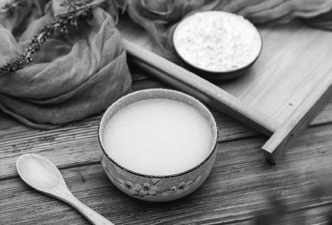

我们对抗病毒，靠的是身体的免疫力，因此，没有一个预防方可以一劳永逸。唯有跟随时节的转换，每日的一饮一食，分阶段使用不同的配方，才能更好地增强体质，提升免疫力。

新冠肺炎疫情发生以后，有的朋友才看到我前一年写的提示和食方，就来问我，错过了第一阶段的调理食方怎么办？我真的很难回答。
天时是不等人的。错过了再补，非常难。
我们对抗病毒，靠的是身体的免疫力，因此，没有一个预防方可以一劳永逸。唯有跟随时节的转换，每日的一饮一食，分阶段使用不同的配方，才能更好地增强体质，提升免疫力。
四季并不是简单的循环重复。每一年都有它独特的天时、地利和气候，对人体的健康也有不同的影响。
一年中，每个节气容易出现的身体问题，分为两类：一类是所有年份的普遍规律，比如冬至是一年中心源性猝死的高峰；一类是当年独有的，比如有的年份心源性猝死的病例更多，比如“非典”、新冠肺炎，在特定年份暴发。
我们对于这两者都要注意预防。
所以，我在《吃法决定活法》一书里，写了年年通用的二十四节气食方；在每年的《顺时生活》健康日历里，还会加上当年的“六气饮食方”。普通读者日常养生吃通用节气食方就可以了，而专注于顺时生活的读者们，想要更好地防病，就可以辅以每年特配的“六气饮食方”。
《黄帝内经》按天气变化将一年分为六个阶段，称六气〔初之气、二之气、三之气、四之气、五之气、终之气（六之气）〕，每一个阶段为期两个月，由两种气候因素（风、寒、暑、湿、燥、火）主导（每年不同），它们相互作用，对人体健康产生影响。
在每一气期间，针对当季人体容易产生的问题，我们用膏方、汤方、粥方、茶方进行加强保健。
例如：己亥年的终之气（2019 年11 月22 日6：00到2020 年1 月20 日2：00）的保健方是果菊清饮，庚子年的初之气（2020年1月20日3：00到3月20日23：00）的保健方是桂芝陈皮羹。
冬天本应防寒，为什么己亥年冬季我让大家喝果菊清饮来清肺热？春天本应防上火，为什么庚子年春天我在食方里要加温补的肉桂呢？
在下一节《饮食防病的三个阶段》中我将为您一一道来。
去年（2019年）冬天，陈老师反复说要喝果菊清饮，我自认为是寒湿体质，就没喝过，没有遵守顺时养生，所以体内内热积蓄起来的湿毒，导致了口腔溃疡，很难受，一个多星期才好。要知道我很多年都不长口腔溃疡了，却在这个特殊年份特殊时期（新冠肺炎疫情期间）暴发。从这件事情中我明白了，只有坚持顺时生活才是养生之道。
——英子（湖南）
下面以新冠肺炎疫情期为例，来看看饮食防护如何顺应天时，分阶段找重点。
2019年年底开始的传染病，起于2017年的“燥”，长于2019年的“湿”，成于己亥年终之气（2019 年11 月22 日6：00到2020 年1 月20 日2：00）的“湿热”，化于庚子年初之气（2020年1月20日3：00到3月20日23：00）的“寒”，将终于庚子年二之气（2020年3月21日0：00到5月20日20：00）的“暖风”。
其中，庚子年初之气的“化”指疫情的演变，一是热极生寒，二是盛极而衰。
以上是我根据《黄帝内经》所做的分析。仅代表个人的观点，提出来与大家探讨，倘有纰缪之处，尚希方家指正。
所以饮食防病也是分阶段的，有先后次第、不同的重点。
以下是普通家庭全家人一起吃的增强体质食方。易感人群、经常外出人群的抗病食方参见本书第169页。
2017年：润燥
在年初发布的音频里我谈了个人看法：2017年（丁酉年）养生宜以防燥热为主。上半年预防风热外感病，下半年重点养心阴，预防心烦、燥热、上虚火。
饮食建议包括：本年夏至节气宜多食麦仁，秋季多吃百合、莼菜。
——“允斌顺时生活”公众号2017年文章
2018年：清火
2018年（戊戌年）是“火年”，天气回暖会早，春夏将有反常的火热。春天花会早开，夏秋果会早结。本年仲春时人体的肝气如果不调理好，容易上肝火，老年人容易血压升高。夏季容易上火。
饮食建议包括：春季可以比往年多喝一些养生绿茶，并可以将饮用时间延长到夏季。
——《时光知味》，2017年出版
2019年：祛湿
2019年（己亥年）的谷雨节气会有较多雨水。本年大暑节气，身体有湿气的人会比较难过。本年初秋，人体易被湿热所困。本年仲秋，身体上燥下湿现象比往年更突出。到己亥年冬季，仍须注意祛湿热。
饮食建议包括：本年的芒种节气宜食茯苓及鸡内金，夏季多喝荷叶陈皮茶和荷叶冬瓜皮茶（根据不同体质选择），三伏黄芪粥中加入茯苓、赤小豆、白扁豆。全年宜常食莲子。
——《顺时生活》（2019健康日历），2018年出版
关于这个阶段的防病重点，我在2019年11月给读者朋友们写过一个提示：
这两个月要特别注意呼吸系统疾病（如感冒、肺炎等）伤及心脏，对年轻人会留下隐患，对老年人则可能有生命危险。
由于己亥年湿气重，入冬后气温比往年偏高，所以在本该防寒的冬季，我们却喝了两个月的果菊清饮来祛湿热、清肺热。
原料：罗汉果1个，鱼腥草30克，菊花3克。
做法：可以一次煮好一天的量，也可以分成三份用保温杯泡饮。
功效：清肺、消炎、抗敏，调理咽喉炎和肺部炎症引起的咳嗽、咽炎、黄痰、青春痘。
适宜人群：经常长痘者、咳嗽痰黄者、小便黄者、白带黄者、咽炎患者、慢性炎症患者、吸烟者、“三高”（高血压、高血糖、高脂血症）患者、空气污染及雾霾严重地区的人。
入冬以来我一直在按照老师的食方顺时生活，不断地变换着喝果菊清饮、抗流感饮、加强版梅子汤。所以，遇到了现在流行的新冠肺炎能做到心里不慌张。
——ZNF
由于我每年冬季容易上火，嗓子疼，加上现在是疫情时期，所以一直喝着果菊清饮。虽然偶有嗓子干痒，但没再像往常一样疼痛。
——飘逸隽永
香包昨天刚刚做好，最近一个月天天早上用银耳煮粥，也经常喝果菊清饮，全家老小都没有出现咳嗽、喉咙痛、感冒这些问题，哪怕偶尔喉咙稍微有点上火不适，用吴茱萸贴几天就好了。
——桑小陌
今年深冬（2020年1月），容易有传染性疾病流行。
饮食预防：将果菊清饮和橘香梅子汤同煮（孕妇去掉山楂）。
——《顺时生活：2020健康日历》，2019年出版
根据《黄帝内经》，从己亥年冬天开始出现的疫病，到己亥年、庚子年交接之际，会集中暴发。
原因是己亥年终之气有湿热，庚子年初之气有寒，人体寒热夹杂，抵抗力低，所以易感染，难治愈。
这段时间须重点防护，所以建议大家喝的是果菊清饮和橘香梅子汤的合方，也就是把果菊清饮和橘香梅子汤放到一起煮水喝。
原料：川红橘或橙子（功效：散风寒、抗病毒）2个，罗汉果1个（压破），牛蒡（功效：清肺热，化痰，调理咽喉肿痛）20克以上，乌梅6个，山楂10克（孕妇不用），甘草5克，陈皮2克，大枣（功效：调理气血，预防消化不良）6个。
还可以增加：1.黄芪（功效：补气固表，平时常喝可以增强对病毒的抵抗力）30克；2.玫瑰花（功效：缓解压力）20朵。
做法：煮40分钟，可煮3次。
由于这段时间人体寒热夹杂，所以从大寒节气开始，要增加一个食方：桂芝陈皮羹。
我按照老师的《顺时生活》日历书过日子，感觉很好。昨天煮了加强版梅子汤，满屋飘香，喝起来酸酸甜甜的。
——梅
我发现加强版的梅子汤对睡眠不好的人特别有效果。我以前没喝加强版梅子汤，晚上都是在11点以后才睡，现在每日喝，一到晚上的9点就困，而且以前还便秘，现在一天最少大便两次。
——42群读者
我女儿感冒咳嗽，中医、西医都看了，吃了好多药也不见好。后来想起了陈老师讲的罗汉果酸梅汤，喝了两天奇迹就出现了，居然不咳了。
——风和日丽
昨晚出去风很大，我回家后感觉头及嗓子都不舒服。早晨煮了加强版甘草陈皮梅子汤，对解决咽喉方面的问题太有效果了，今天感觉好多了。
——品茗赏鱼
小丽问：柑橘果皮一定要新鲜的吗？
允斌答：新鲜橘皮与陈皮功效不同。橘皮无论新的（鲜橘皮）、陈的（陈皮）都有消食、化痰、止咳、理气、温胃的功效。而它们的区别主要是：鲜橘皮偏重于解表和泄下；陈皮偏重于健脾和化湿。它们之间最大的区别是：新鲜的橘皮气味强烈，刺激性更强，入药有局限性；陈皮比鲜橘皮更加平和，可以与各种中药配伍，适用的体质和病症范围要广得多。
在己亥年的终之气阶段，用两个月的时间喝果菊清饮来祛除身体的湿热，清肺消炎。
进入庚子年初之气的两个月（2020年1月20日3：00到3月20日23：00），就可以每日喝桂芝陈皮羹，来祛下焦寒瘀，清上焦虚火。原料：肉桂6克，木耳1小把，陈皮1个，枸杞子1大把，红糖适量。
自测平时是否有以下情况：暴饮暴食，喝酒过量，咳嗽发热。若有，则加入牛蒡片同煮，煮过的牛蒡片也可以吃掉。
做法：将肉桂、木耳、陈皮、牛蒡片加水炖1个小时，放入枸杞子和红糖搅拌均匀后关火。
功效：补肾，养胃，调理贫血。祛下焦寒瘀，清上焦虚火。
适宜人群：血瘀体寒却又经常上火的人。
这个食方是桂芝陈皮四物红糖膏方的简化版，这个膏方是我为中老年人特配的。庚子年的头两个月，最需要增强体质的正是中老年人。
顺便说一下，庚子年是养皮肤和头发的黄金年份。肉桂能促进气血循环，改善皮肤和头发的营养供应，延缓头皮衰老，对于头发生长很有好处。头发若得到充足的气血滋养，会比平常年份长得更好。
桂芝陈皮羹，补肾、养胃又调理贫血，很适合我们全家人。看到老师《顺时生活：2020健康日历》书中1月20日顺时饮食的提示以来，我家隔三岔五地做着喝。最近，更是喝得频繁了。我坚信我们全家跟上老师的节奏，都能顺顺利利地度过疫期。
——Ping
做法：先熬一锅杂粮粥（顺时粥），放少许油盐，快熟时加入切碎的荠菜、香菜、葱叶、萝卜缨（或带皮萝卜）等辛味蔬菜。
功效：排浊，祛湿，健脾胃，抗病毒。
今年多放荠菜、香菜、葱叶和萝卜缨（或带皮萝卜），预防流感及其他传染病。
冬春之交食用，有助于升阳排浊、抗病毒。
——《顺时生活：2020健康日历》，2019年出版
原料：共12种，按中药君臣佐使法搭配。
君——
云茯苓：健脾祛湿，宁心安神；
赤小豆：和血祛湿，调经通乳；
小米：滋阴清胃，补益虚损。
臣——
玉米：益肺宁心，健脾开胃；
绿豆：清肝解毒，明目去火；
荞麦：清胃止咳，减脂刮油。
佐——
燕麦米：益肝减脂，润肠止汗；
红高粱：健胃补脾，收敛固脱；
糯米：补气固肾，滋养皮肤。
使——
红米：调血益心，益脾消食；
糙米：安定心神，营养皮肤；
大米：补中益气，健脾养胃。
做法：浸泡2小时，煮成粥。
关于顺时粥配方的说明，参见本书第160页“全家顺时粥：顺时食粥，性命无忧”。
日常饮食建议：
1.三餐可常吃这些蔬菜：香菜、荠菜、胡萝卜、萝卜缨。
2.做菜可多放这些调料：肉桂（或桂皮）、陈皮（打粉放入）、花椒。
3.一定要吃主食！只有吃主食才能养好脾胃。各种杂粮按功效搭配着吃，长期坚持，比吃人参、冬虫夏草还好。在传染病流行期间，千万不要盲目节食，以免损伤正气。
按照老师的《顺时生活：2020健康日历》中1月12日的提示，我早早就把七菜羹的食材准备好了。我采回来新鲜的嫩荠菜，焯水后放在冰箱里冷冻，大赞自己明智的做法（后面就有疫情，不方便购物了），大年初二回来后就宅在家里没有出去。今天吃着鲜美爽口的七菜羹，心里很感恩老师每个节日的暖心提示。
——爱紫色的女人
孩子夏天游泳，冷得穿很多衣服，还不出汗。寒假回来，一脸痘痘，我赶紧给他喝荠菜水、顺时粥、果菊清饮、梅子汤，现在好多了。
——煜
前天早上醒来后，咽喉痛，我用养生壶煮了鱼腥草、橙皮、杭白菊、罗汉果，喝了一天。晚上开始发低烧，喝了感冒灵，第二天早上醒来就好了。去年跟着老师喝了几个月当归黄芪红枣，今年喝了一夏天生姜红枣，最近一段时间，一直和孩子喝果菊清饮（加陈皮进去），身安心安。
——Luna
这些天在家，我煮了果菊清饮和加强版梅子汤。一直在喝桂芝陈皮四物红糖水。今天做了祛下焦寒瘀、清上焦虚火的桂芝陈皮羹，下午喝完之后感觉上焦清凉，这说明火气都引火归元了。还利用家里的佐料，做了很多香包，每人一个，没事儿就拿来嗅嗅，很管用！
——乐心
跟着老师冬季喝果菊清饮，近日喝桂芝陈皮羹，最后把木耳吃光光，喝了几天，感觉肚子在晨起后好多了，不再有便便没有拉干净的感觉了。因为有老师，平时有点伤风、感冒都不怕，按照老师教的方子一治一个准。
——梅
之前的果菊清饮，现在的桂芝陈皮羹，每一步都不想错过，错过便是遗憾！不负光阴，顺时生活。
——云心落
最接地气的养生食疗。
——AI Sunny
很温暖，每日的食方无缝对接。
——一丹
读者问：《顺时生活》日历上每日建议的食方都要吃吗，还是根据自己的身体情况选择？
允斌答：是这样的，书上建议的食方，如果是普遍建议的，你可以都吃；还有一种情况是，书中每五天有一个自测，到底某一个食方吃还是不吃，你可根据自测的结果选择。
一懒众衫小问：老师您好，感谢您讲的顺时生活，依据您的指导，我的体质有了明显的提升。这次对抗疫情的食方果菊清饮我也跟着喝了，但是喝后有轻微的腹泻，是不是身体太寒了？我还能喝吗？望老师指教。
允斌答：须按照《顺时生活：2020健康日历》书中几周前的提示操作：进入深冬后，应该与梅子汤同煮，梅子汤可止腹泻。
英问：陈老师，我们果菊清饮与梅子汤一同饮，但十岁小朋友可以吃桂芝陈皮羹吗？
允斌答：可以。不过桂芝陈皮四物主要是给中老年人增强体质用的。
读者问：允斌老师，现在还能把桂芝陈皮红糖与咖啡一起冲泡吗？
允斌答：可以的。
映山红问：桂芝陈皮羹可以用桂芝陈皮红糖代替吗？每日一块。
允斌答：当然可以。桂芝陈皮四物红糖本就是桂芝陈皮羹的代用品。
蓝天问：现在每日按照老师说的顺时养生，《茶包小偏方，喝出大健康》中的茶饮也一直在喝。这次的疫情也是按照老师介绍的茶包偏方做预防！效果棒棒的！请问老师，顺时粥里可以放点银耳吗？谢谢！
允斌答：可以的。
竹问：老师，请问2020年的顺时粥孕妇可以吃吗？盼回复，谢谢了。
允斌答：可以的。
百合精灵问：老师，您好，没有新鲜的荠菜，去年焯过水的荠菜在冰箱冻着的，可以用吗？
允斌答：可以的。
心如止水问：老师，您好！荠菜是去年开春采的，保留到现在的，行吗？
允斌答：可以。
敦敏问：陈老师，您好，新冠病毒流行的特殊时期不能出门，家里有桂皮。请问陈老师，桂皮可不可以替代肉桂？
允斌答：可以临时替代一下。肉桂：暖胃止胃痛；桂皮：理气止胃痛。如果只是调理胃的问题，肉桂和桂皮可以混用。细分起来的区别是这样：胃寒引起的胃痛，用肉桂更好；胃神经官能症，生气时会胃痛，用桂皮更好。也可以在“允斌顺时生活”微信公众号历史文章中搜索“肉桂”查看详细内容。
Erin-玲问：有老慢支的老人可以在七宝粥里面加薤白吗？不过他老是出汗，一吃热的东西不久就热，这是阴虚吗？这是身体差，不能调节身体寒热的表现啊。我记得好像之前看到有人留言，春天好像是可以喝薤白粥预防（呼吸道疾病）的。
允斌答：有老慢支的老人加薤白煮粥很好。如果老年人晚上躺下容易咳，甚至咳吐泡沫痰，平时也可以常喝薤白粥。
原料：薤白30克，大米适量。
做法：买薤白回来跟大米一起煮粥来喝。
老年人祛湿，要注意心肺部位。老年人湿气重影响到心肺部位，容易产生痰多、慢性支气管炎、胸闷甚至胸痛。饮食调理可以用薤白煮粥喝。
薤白是薤（苦藠）或野菜小根蒜的鳞茎。它既是蔬菜又是中药，在药店可以买到干品。
薤白能化解心肺和脾胃的水湿，上能缓解胸闷、心痛、，化痰平喘，调理慢性支气管炎，中下能止胃痛减轻寒气、腹痛，下能通便，又能调理慢性肠炎和寒气引起的腹痛。
在新冠肺炎疫情暴发初期，大家曾经讨论，到底这次疫情是湿温疫还是寒湿疫？国家卫健委的第三版诊疗方案强调“清热”，第六版诊疗方案则强调“寒湿郁肺”。这说明先发病的人和后发病的人症状有区别。
所以进入2月后，医生们基本一致认定这是寒湿疫。
其实，新冠肺炎疫情以“湿”为主。大寒节气之前，有“温”；大寒节气之后，就是寒了。
从大寒节气开始，防治新冠肺炎，确实要祛寒湿。
但是，对于新冠肺炎的预防，其实最初是从祛湿热开始的。这个预防的时间，是从2019年11月小雪节气，到2020年1月小寒节气，此时需要给身体祛湿热。因此，在这两个月，我给大家开的保健茶方是果菊清饮。
到了2020年大寒节气之后，庚子年春寒来到时，再用食方来防寒。
实际天气状况：2月14—16日，全国气温骤降十几摄氏度，不仅北方下雪，连南方也有多地下雪，湖北遭遇“断崖式降温”并下雪。
己亥年人体湿气非常重，而且冬天不寒冷，反而有点热，所以，如果在过去的两个月（指2019年11—12月）里，我们没有清除身体的湿热，就很容易感染病毒，很容易发热咳嗽，甚至患上肺炎。
《黄帝内经》对于庚子年的春天又有什么样的记述呢？它认为庚子年的春天是偏冷的，会有寒气，所以我们要注意的是防寒。《顺时生活：2020健康日历》书中曾提前预警：可能会有雨雪，大幅降温，要注意防寒防病。
同时，《黄帝内经》中也有描述：己亥年与庚子年这两个年份相交的时间会有传染病暴发，而且这个病是厉害的传染病。
这些都是我们祖先的智慧，所以，我建议大家都好好读一读《黄帝内经》，让我们更好地顺时养生。
补记：
以上是2020年2月2日所言。其后的天气实况报告验证了《黄帝内经》的准确性。
关于己亥深冬的暖：
2月16日媒体报道，2020年1月，全球气温破历史纪录，是自有气象记录以来最热的1月，甚至南极气温首次突破了20℃。
关于庚子初春的寒：
2月14—16日，全国气温骤降十几摄氏度，不仅北方下雪，连南方也有多地下雪，湖北遭遇“断崖式降温”并下雪。
想给自己也给顺时生活的朋友们提个建议，《顺时生活》日历一定要反复看，有时间要把一年的节气食方、茶方、保健饮方都看看，以便提早准备食材，而且对待不太理解的食方，也要对照日历的自查来看是不是真的不适合自己，假如真的不适合自己，再按照老师的提示用替代方子进行替代，总之一定要坚持，这一点最重要。
当初，我按照《顺时生活》日历中说的要从2019年11月22日喝到2020年1月19日的己亥六气保健饮——果菊清饮就不是很理解，自认为好像不太适合，所以当时没有及时用这个保健饮方。直到11月底，有一天因为嗓子不太舒服，就试着煮了一次，结果喝了一天就好了，感觉很神奇，就这样一直坚持了下来！
——杨杨
跟着节气顺时养生，顺应自然规律，顺应天地，身体自然会健康。玫瑰花解肝郁，茯苓粉健脾祛湿，老荠菜寒热通杀……这些平和的食材可以经常食用，增强身体的抵抗力；再配合经络梳，身体气血充足，血液循环畅通，身体所有的不正常都会慢慢恢复正常。所以一饮一食，生活习惯真的很重要！如果没有良好的生活习惯和心态，再好的茶方、药方都只是形式！
——倩儿
希望更多的人能回归传统的养生方式，跟随节气转换来过日子。我们一起来顺时生活，祈愿大家都能得天之助，不负光阴……
——Wei
在这么严重的传染病面前，我才知道顺时养生多么重要，去年年初跟着老师顺时养生，后面没坚持，临时抱佛脚，没用啊。明天一定从头开始，像陈老师说的，20 年后一定会感谢自己！
——燕双
按老师的方法顺时生活，平时提升了自身免疫力，关键时刻就能抵御外毒的侵入，一定会顺利过关。
——微笑
我一直在想，可能有很多人只是得了普通的感冒发热，用老师平时教的葱姜陈皮水、蚕沙竹茹陈皮水都应该很有效，如果实践过，这时就不会太惊慌，可以先分辨清楚再决定是否去医院。今年冬天没少喝果菊清饮，没有出现往年冬天容易咽喉痛、感冒的现象。希望这次疫情平稳度过。我已经深深感受到顺时养生的神奇，来年我会更加认真地按照《顺时生活》日历的提醒来养生。
——琦琦
2020年2月2日直播实录：
己亥年（2019年）湿气特别重，而且己亥年最后两个月，按照《黄帝内经》的说法，是 “时寒气热，流水不冰，地气大发”。
什么是“时寒气热”？该冷不冷，病毒不能蛰伏，人体生热毒，与湿结合起来，很容易有炎症感染。
所以在我2018年出版的《顺时生活》（2019健康日历）中，我提前建议大家在2019年冬天，要喝两个月的果菊清饮来祛湿排毒，就是为了帮助身体顺应2019己亥年气候环境对人体的影响。
“流水不冰”是什么意思呢？就是说平常年份水会结冰，而在己亥年的冬天，水不容易结冰了，说明气候不寒，反而有点偏暖。
我家旁边有个湖，年年冰冻得结实，2019年冬天，我观察到，靠岸的地方总有一片水域冻不实。
“地气大发”是什么意思呢？这个就非常耐人寻味了，我们可以看到，在己亥年（2019年）的最后两个月，很多地方都出现了地震。
这两个月地震频发，连一向少地震的湖北也地震了。2019年12月26日湖北应城地震，震中距离武汉只有97千米。江汉平原地势低洼，难得地震。当时我正好去距离震中很近的地方讲课，我特意问当地上年纪的人上一次地震是何时，他们都说记不清了。那个晚上，有3个不同地域先后地震。
古人有一句话是“大灾之后常有大疫”。
一般来说，在地质灾害后，就会有疫病流行，为什么呢？因为地下也可能埋伏着病毒，地震过后，潜伏在地层深处的病毒就会出来。此外，地质灾害也容易促进传染病的传播。当然，这只是一个规律。原因还有待专家分析，作为普通人，我们不要妄自揣测。